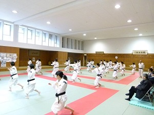
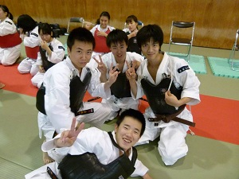
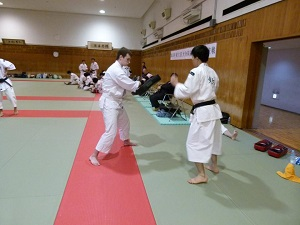
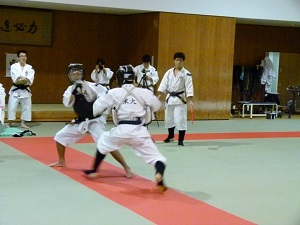
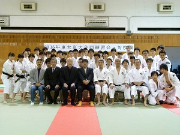
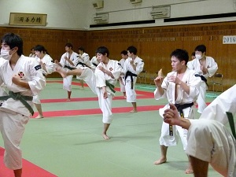
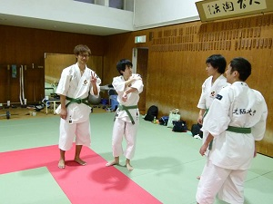
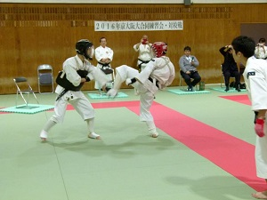
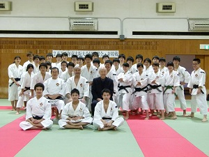

京都大学体育会少林寺拳法部
写真
合同練習（2015年度）
東大戦（11月ごろ）
東大戦です。今年は京大がホストです。
「戦」とついていますが別に仲が悪いなんてことはないです。むしろ仲良しです。
アタ（留学生）とミット蹴りをする東大さん。
運用法の対抗試合をしました。今年初の試みです。女子、男子軽量級、男子重量級の３部門で団体戦をしました。結果ですが…今年は東大に軍配が上がりました。うーん、悔しい！！
記念写真。来年もよろしくお願いします！！
阪大戦（2月ごろ）
二年ぶりに京大ホストの阪大戦です。
交流をする緑帯たち。楽しそう。
阪大戦でも運用法対抗試合をやりました！！結果は…阪大に軍配が上がりました。ああああ悔しい！！後輩たちよ、来年以降頑張ってくれ…。
記念撮影！場所も近いですし、これからもずっと仲良くしてください！！